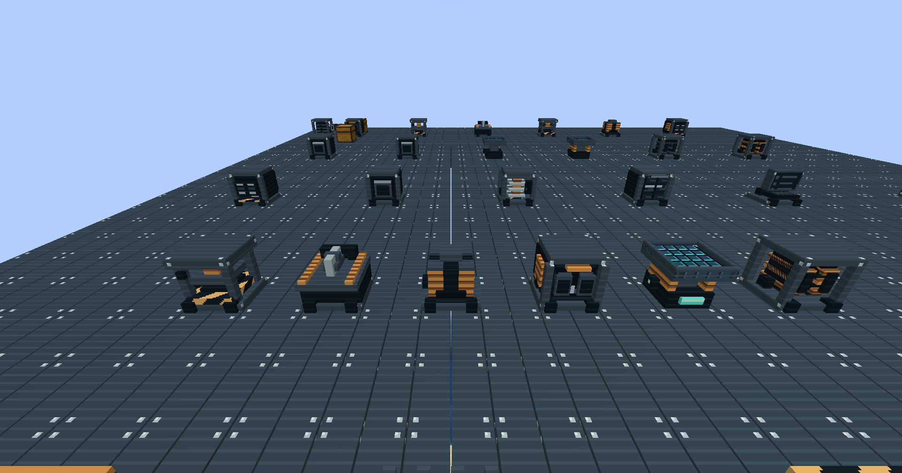
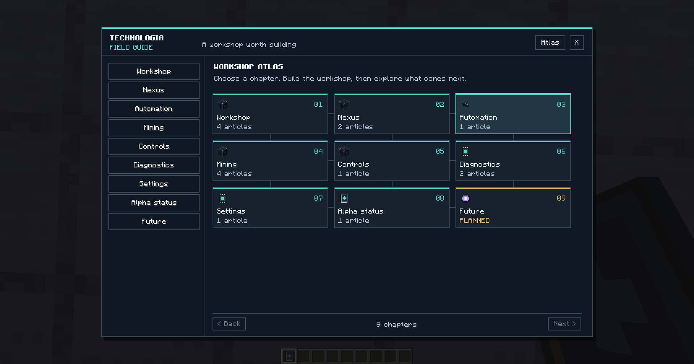

IN DEVELOPMENT / MINECRAFT JAVA
Your next
industrial age.
The ambition of classic modded Minecraft. A coherent world of machines, server rooms, distant planets and extraordinary technology.
Current version: 0.1.0-alpha.5 for Minecraft 1.21.1. The Fabric, NeoForge and Forge jars are built from the same shared code. NeoForge is the first test platform.
THE IDEA
Build a factory.
Then give it a world to change.
Start with salvaged materials and a workbench. Grow into chemical plants, rack-based storage, automated production and off-world industry. Nature and selected magic systems feed back into engineering—new catalysts, new materials and new ways to solve a problem.
An original mod inspired by AE2, Mekanism, RFTools, Draconic Evolution and Chaotic Evolution, Immersive Engineering and the broader 1.12.2 ecosystem. It is an early alpha, with most of the full vision still ahead.
THE CONTENT MAP
Many systems.
Built to work together.
Explore the requested scope. Status labels distinguish the working prototype, planned systems and additional proposals.
BEYOND FIVE TIERS
A long road.
More than one route.
Eighteen starting milestones, expandable as the recipe graph takes shape. Each unlocks a new capability. Individual machines use only the tiers and upgrades that make sense for them.
Colors identify functions such as power, processing or exotic technology. Tier names, numbers, materials and geometry identify advancement. Farming, pneumatics, mob production and nature systems form parallel branches.
The milestones above are proposals. Machine tiers are a separate scale: machines have eight tiers, Mk I to Mk VIII, installed with tier kits. Since alpha.5 a machine above Mk I shows its tier as a coloured band on its front.
ONE ART DIRECTION
Depth in the model.
Clarity in the interface.
Dark ceramic, brushed metal, recessed bays and readable instruments. The same visual language carries from workshop machinery to exotic endgame structures.
Current generated 32px front textures of all 31 machine types in alpha.5. Each machine also has its own three-dimensional model: open press frames, saw tables, exposed coils, drill assemblies, raised solar panels and recessed drive trays. Static geometry and physical profiles share the same source. Moving animations and finished multiblocks remain future work.


Recognizable machines
Use real geometry for drive bays, frames, coils and tanks. Reserve animated renderers for components that actually move.
Understandable controls
Consistent input/output layouts, explicit costs, useful status messages and advanced controls in familiar places.
Practical detail
Bake static models, limit animation work and profile large factories. Visual depth should not require excessive tick work.
DEVELOPMENT / 0.1.0-ALPHA.5
A working foundation.
An honest roadmap.
Start on one platform, validate the factory loop, then expand. “Builds successfully” and “tested in a modpack” are different milestones.
What alpha.5 contains
- 31 machine types; eight machine tiers, Mk I to Mk VIII, shown from Mk II as a band on the machine's front
- Seven tier kits that upgrade a placed machine in place; processors with 1 to 8 parallel lanes by tier
- Power without fuel: Water Wheel, Windmill and Thermoelectric Generator
- Wireless power on 256 public channels; four conduit materials from 200 to 32,000 FE/t
- Enrichment Chamber and Metallurgic Infuser; silver, nickel, electrum, invar and constantan
- Phyto Chamber, Auto Harvester, Growth Accelerator and Bonsai Pot
- Auto Sieve and Hand Sieve with flint, iron and diamond meshes; compressed cobblestone, gravel and sand
- Vacuum Collector, Vector Plates and four crates with 27 to 54 slots
- A Chunk Loader that uses the game's forced chunks and can be switched off in the server config
- Redstone control, comparator output and result ejection on machines
- Three magnets and a Travel Staff; a wrench that rotates, and dismantles a machine keeping its tier and energy
- Machines refuse items they cannot process; Resonance Blooms speed up nearby processors
- 53 guide articles in twelve chapters, a Progress page and 45 workshop advancements
- 76 blocks and 68 standalone items; alpha.4 worlds load as they are
- Every delivered version stays available in Releases
Compatibility status
| NeoForge | First test platform · full automated server test suite |
|---|---|
| Fabric | Same shared code · automated server smoke tests · the owner reported a short alpha.4 client launch that seemed to work · real play testing still to do |
| Forge | Same shared code · automated server smoke tests · real play testing still to do |
| Energy & inventories | Adapters implemented |
| Akashic Tome | Its NeoForge 1.21.1 build should accept the Field Guide with default settings · read from its source, not tested in game · no Forge or Fabric 1.21.1 build found |
| Create integration | Planned · kinetic bridge pending |
| Later versions | Planned · 1.21.1 and newer · separate tested ports · cadence not decided |
The automated tests run on headless servers, without a game client. Their results are recorded in docs/VALIDATION.md.
Energy uses FE on Forge/NeoForge and Team Reborn Energy on Fabric. Curios, recipe-viewer entry points (JEI first; EMI and REI as candidates to evaluate), Storage Drawers and Cooking for Blockheads are part of the integration plan; availability per loader and version is still to be resolved.
Alpha.6: server racks
A rack is one block: a cabinet with bays for modules. Racks replace Storage Cores, and existing cores keep working in old worlds. Too much power demand gives a warning and then trips a breaker; nothing is destroyed. Not started.
Harden and connect
Client and multiplayer playtesting on the three loaders, a guide hotkey, recipe-viewer entry points, modular terminals, channels and autocrafting.
Expand the world
Fluids and gases, chemistry, reactors, the multitool, resource dimensions, space, fusion and the chaotic endgame.
FOLLOW THE BUILD
The factory starts here.
Browse the code, read the full scope or bring an idea to the project.